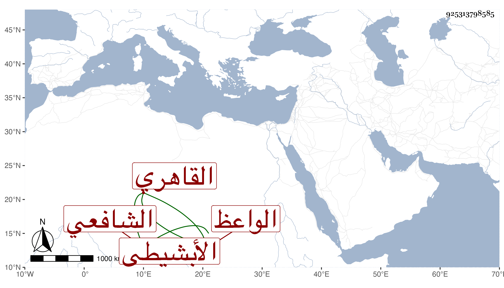

0902Sakhawi.DawLamic.ITO20230111-ara1.EIS1600.925313798585
Biography ID: 925313798585
أحمد بن إسماعيل الشهاب الأبشيطي القاهري الشافعي الواعظ . ولد سنة ستين وسبعمائة تقريبا تفقه قليلا ولزم قريبه الصدر الأبشيطي وأدب جماعة من أولاد الكبار ولهج بالسيرة النبوية فكتب منها كثيرا إلى أن شرع في جمع كتاب حافل فيها كتب منه نحو ثلاثين سفرا يحتوي على سيرة ابن إسحاق مع ما كتبه السهيلي وغيره عليها وما اشتملت عليه البداية للعماد بن كثير وعلى ما احتوت عليه المغازي للواقدي وغير ذلك ضابطا للألفاظ الواقعة فيها وكان يتكلم على الناس في الجامع الأزهر . مات في سلخ شوال سنة خمس وثلاثين وقد جاز السبعين . ذكره شيخنا في الأنباء والمعجم والمقريزي في عقوده وقد شارك الشهاب الأبشيطي الماضي في اسمه واسم أبيه ونسبته .
